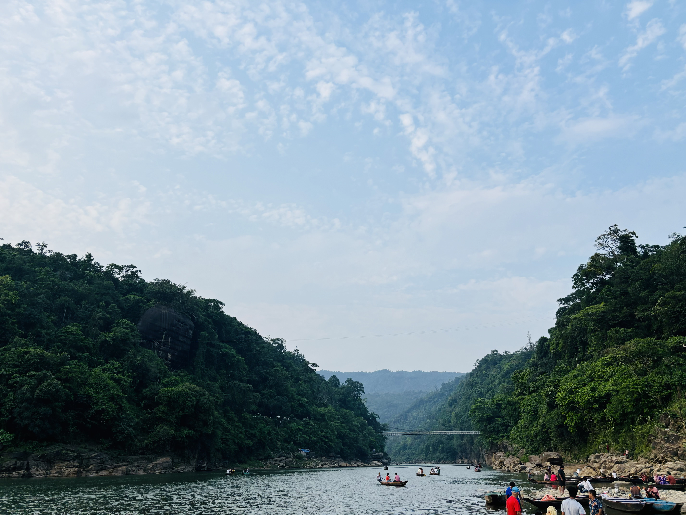

Tonmoy Sutradhar
24 May, 2024
StyThis is the most beautiful place in Sylhet(Jaflong 0-point)
We are try different type of food.
Now exploring different kind of place.

Located near the end of the Sylhet-Companiganj-Bholaganj highway, Bholaganj is a quick 41 km from central Sylhet. one can rent a car or microbus for a daytrip for only 2500-3000 taka. Local bus or CNG Auto-rickshaw can be taken from Ambarkhana. It normally takes an hour and a half from Sylhet. The CNG Auto-rickshaw rental for a full-day is approximately 1000-1500 taka. Bus fare is 50-60 taka per person. Once in Bholaganj, it is simple to take a boat to SadaPathor.
Jaflong is situated 60 km far away from sylhet city. It is hilly region. It is situated besides the river Mari in the lap of Hill Khashia. The Mari river is coming from the great Himalayas of India, which bringing million tons of stone boulders with its tide.
Lalakhal, one of the most popular tourist destinations, is situated in Jaintapur Upazila, next to the Tamabil road, 35 kilometres from Sylhet. The tranquillity of nature can be experienced while exploring Lalakhal's unique scenery while participating in various recreational activities. The origin of the name 'Lalakhal' is a mysterious one. In Bengali, 'Lalak' means red or redness, while 'Khal' means a canal or river. The name Lalakhal comes from the scarlet hue that the river Shari's water takes on in the winter. During winter, water from the hills carries red silt and other sediments downstream, eventually settling on the riverbank. As a result, the water in Lalakhal takes on a reddish tint resembling the colour 'Lal' (red), which is how the place got its name.